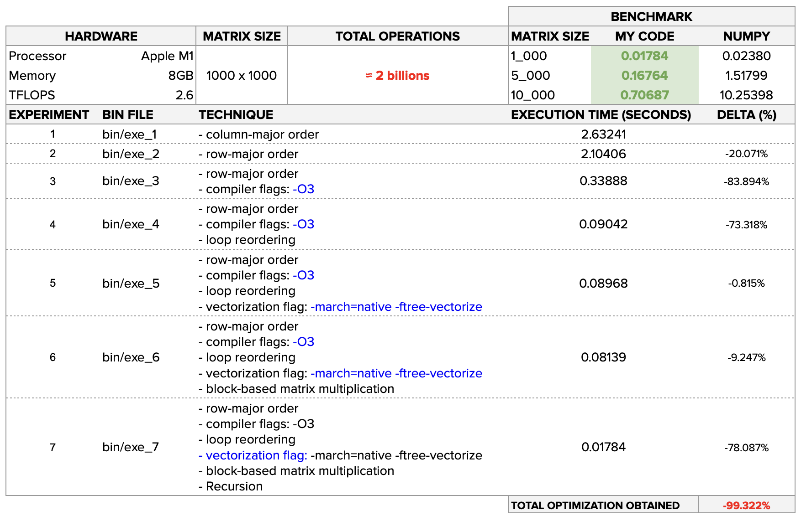

Matrix Multiplication Optimization in C
Introduction
This project was developed on Introduction to Parallel and Distributed Computing class at IME-USP to provides optimized implementations of matrix multiplication algorithms in C, leveraging advanced techniques to achieve high performance. We explore methods like blocking, vectorization, and loop reordering to maximize matrix multiplication efficiency.
🌟 Key Techniques
🔹 1. Row-Major Order
Row-major order stores data row by row in memory. This technique ensures better spatial locality during row-wise traversals, reducing memory access times and improving overall performance.
🔹 2. Use of Optimization Flags
Using optimization flags, such as -O3, adjusts how the compiler generates code by applying aggressive optimization techniques. This can significantly improve performance by reducing execution time and better utilizing the available hardware.
🔹 3. Loop Reordering
Loop reordering adjusts the order of nested loop iterations to optimize memory access patterns. This improves data locality and minimizes cache misses, making computations more efficient.
🔹 4. Vectorization
Vectorization leverages SIMD (Single Instruction, Multiple Data) instructions to perform parallel computations, accelerating processing on supported hardware architectures.
🔹 5. Blocks
The blocks technique breaks matrices into smaller sub-blocks to optimize memory hierarchy usage. This reduces cache misses and enhances performance by improving memory access patterns.
🔹 5. Recursion
Recursion involves breaking down a problem into smaller, self-similar subproblems. In the context of matrix multiplication, this entails recursively dividing the matrices into quadrants and multiplying the corresponding quadrants. This approach can lead to significant performance improvements, especially for larger matrices.
🏆 Outcomes Achieved

📂 Project Structure
src/: Contains the C source code with optimized algorithm implementations.bin/: Contains the executables compiled from sources.
🛠️ Compilation Instructions
To compile the project, use a compiler like gcc with appropriate optimization flags for SIMD and other techniques:
bin/exe_1gcc -o bin/exe_1 src/mat_mul_1.cbin/exe_2gcc -o bin/exe_2 src/mat_mul_2.cbin/exe_3gcc -O3 -o bin/exe_3 src/mat_mul_2.cbin/exe_4gcc -O3 -o bin/exe_4 src/mat_mul_3.cbin/exe_5gcc -O3 -march=native -ftree-vectorize -o bin/exe_5 src/mat_mul_3.cbin/exe_6gcc -O3 -march=native -ftree-vectorize -o bin/exe_6 src/mat_mul_4.cbin/exe_7gcc -O3 -march=native -ftree-vectorize -o bin/exe_7 src/mat_mul_5.c